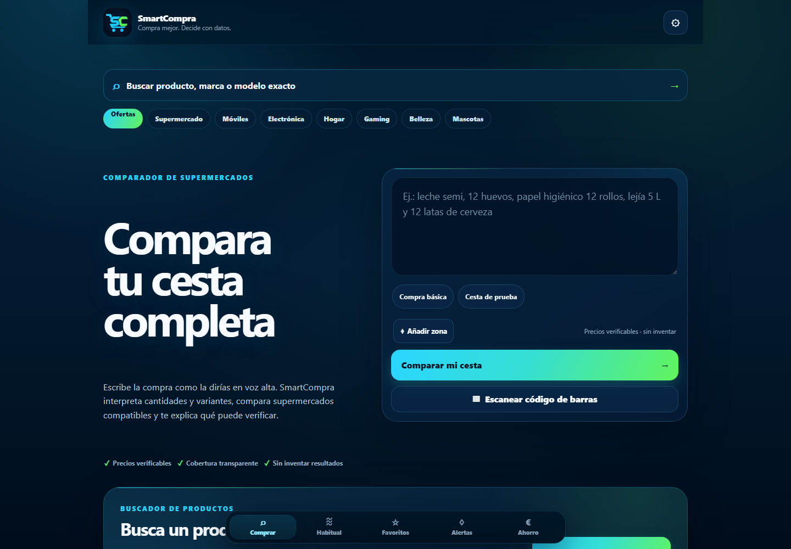

← Volver a trabajo seleccionado
DATOS · SIMULACIÓN · RIESGO
MIL Trader
Un laboratorio de investigación cuantitativa diseñado para observar oportunidades, medir costes y mantener la ejecución real bloqueada sin evidencia suficiente.

Vista del productoQUÉ DEMUESTRA
Capacidades conectadas.
Esta vista resume las áreas que fue necesario combinar para construir el proyecto.
MIL Traderresearch en shadow mode
TypeScriptViemHardhatSolidityTestsShadow Mode
El valor aquí está en la disciplina de validación y en separar investigación de autoridad real.
Volver al portfolio ↗